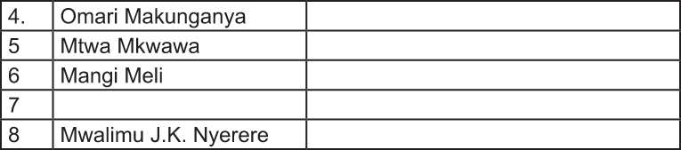

| 4. | Omari Makunganya | |
| 5 | Mtwa Mkwawa | |
| 6 | Mangi Meli | |
| 7 | Sheikh A.A. Karume | |
| 8 | Mwalimu J.K. Nyerere |
(a) Kuondoa utawala wa kikoloni na ukandamizaji wake: Utawala wa kikoloni ulipaswa kuondolewa nchini Tanganyika ili kuondokana na athari zake. Viongozi wa jamii kama vile Abushiri, Bwana Heri, Mangi Sina, Mangi Meli, Mtemi Isike, Chifu Machemba na Mtwa Mkwawa walipinga uvamizi wa mkoloni wakiwa na nia thabiti ya kuwa huru. Mashujaa hawa walipinga unyonyaji, ukandamizaji, udhalilishaji, unyanyasaji, utozwaji wa kodi pamoja na kupinga kuwa chini ya utawala wa kigeni. Vilevile, kuanzishwa kwa mifumo mipya ya kiuchumi, biashara na uongozi. Haya yote yalionesha umuhimu wa kulinda maadili ya Kitanganyika yenye misingi ya utu, haki, upendo na mshikamano.
(b) Kulinda utu na heshima ya Watanzania: Ni muhimu kulinda maadili ya Kitanzania kwa sababu ndio chimbuko la utu na heshima ya Watanzania. Maadili ya Kitanzania yanatengenezwa na kanuni za utu, ambazo pamoja na mambo mengine zinalenga kulinda maisha ya watu katika jamii na kuyaendeleza. Kuenzi maadili haya ya utu ni pamoja na kupiga vita umaskini na tabia zote zinazotokana na umaskini wa vitu na akili. Kuenzi maadili haya ni pamoja pia na kuthamini tunu za Kitanzania kama umoja, uhuru, usawa, mshikamano, amani, haki na upendo. Haya yote yakitekelezwa kwa vitendo, kwa uaminifu, heshima ya utu wa mtu mweusi itarudi na Watanzania wataheshimika popote duniani.
Kijamii
(a) Kuendeleza ushirikiano na umoja katika jamii: Katika nyanja za kijamii, Watanzania walilamua kulinda maadili ya Kitanzania kwa sababu kulikuwa na umuhimu wa kuendeleza ushirikiano na umoja katika jamii. Hii inatokana na ukweli kwamba, wakoloni walipofika Tanganyika walizikuta jamii za Tanganyika zikiwa na umoja na ushirikiano. Umoja huu ulijengwa katika misingi ya utu, ambao ulisisitiza huruma, upendo, uadilifu na mshikamano.